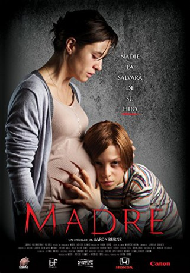

#8642 Victoria Rosana Maite
Alternativ: Madre
 
 IMDB-Wertung: 5.7 / 10
IMDB-Wertung: 5.7 / 10  Metascore: 0
Metascore: 0 
Diana Prieto is pregnant and taking care of her autistic son Martin has become overwhelming. She has no one to help her while her husband Tomas spends months working in Asia. Diana's at her breaking point with Martin when Luz, a gifted caregiver from the Philippines, steps in to help. Martin quickly begins improving under Luz's supervision, but Diana's worried that he's only being taught to speak Filipino. Diana begins to suspect that Luz is using the language barrier and voodoo to turn Martin against Diana and into something far more sinister...
Jahr: 2016
Dauer: 95 Minuten
FSK: 16
Land: Chile Studio: Cargo RecordsTonspuren:
Untertitel: Deutsch,
Auflösung: 1080p (1920x808) Größe: 2990 MB
Genre: Thriller
Regisseur: Aaron Burns
Drehbuch: Aaron Burns
Soundtrack: Manuel Riveiro
Darsteller:
- Cristobal Tapia Montt als Tomás
- Ignacia Allamand als Catalina
- Daniela Ramírez als Diana
- Aida Jabolin als Luz
- Matías Bassi als Martín
- Nicolás Durán als David
- Cristián Carvajal als Dr. Avellán
- Ignacio Furman als Dr. Veloz
- Elvira Cristi als Vendedora Aros
- Gabriel Urzúa als Oscar
- Fernando Alé als Conductor
- Marlene Vargas Brebes als Enfermera
- Steffi Lutz als Amante
- Aida Cabassa als Enfermera
- Andrés Civilic als Gerente Supermercado
Datei: X:\2016(N-Z)\Victoria Rosana Maite (2016, FSK16, 1920x808).mkv seit 11.04.2018
Festplatte: HD 2016(A-Z)
 Es gibt insgesamt 182 Filme in der Gruppe '2016(N-Z)'
Es gibt insgesamt 182 Filme in der Gruppe '2016(N-Z)'